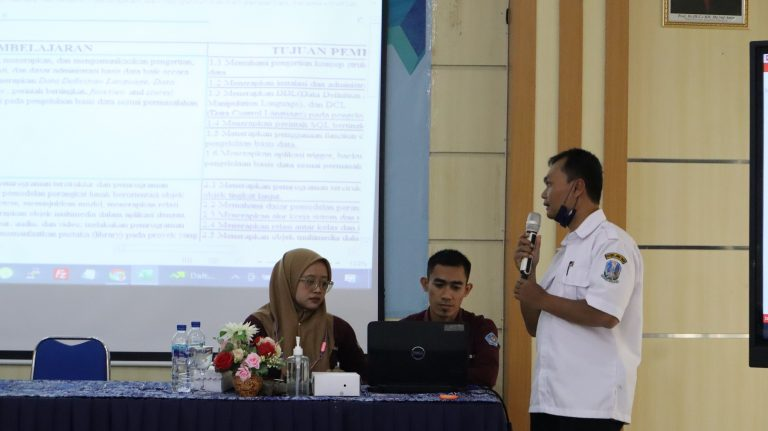

SINKRONASI KURIKULUM BERSAMA DUNIA INDUSTRI, KANESA MENGGANDENG CV. HUMMASOFT TECHNOLOGY

24 Oktober 2022. SMK Negeri 1 Kepanjen Mengadakan Workshop Penyelarasan Kurikulum dan Bahan Ajar dengan mitra DU/DI. Kegiatan sinkronisasi kurikulum bersama dengan Ibu Dra. Sri Rahajoe, M.Si, M.Pd dan CV. Hummasoft Technology. Dalam event ini Hummasoft menyampaikan masukan-masukan kepada materi yang diajarkan di sekolah.
Kegiatan ini dilakukan dengan tujuan agar pembelajaran yang ada di sekolah menjadi relevan dengan yang dibutuhkan oleh Dunia Industri. Dengan seperti ini maka diharapkan lulusan Kanesa menjadi lebih cepat terserap dan dapat mengikuti perkembangan.